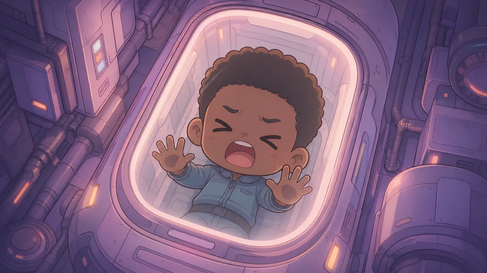
Max woke up mid-scream. He did not remember starting it. He only remembered being inside it, throat on fire, lungs trying to punch his way out.
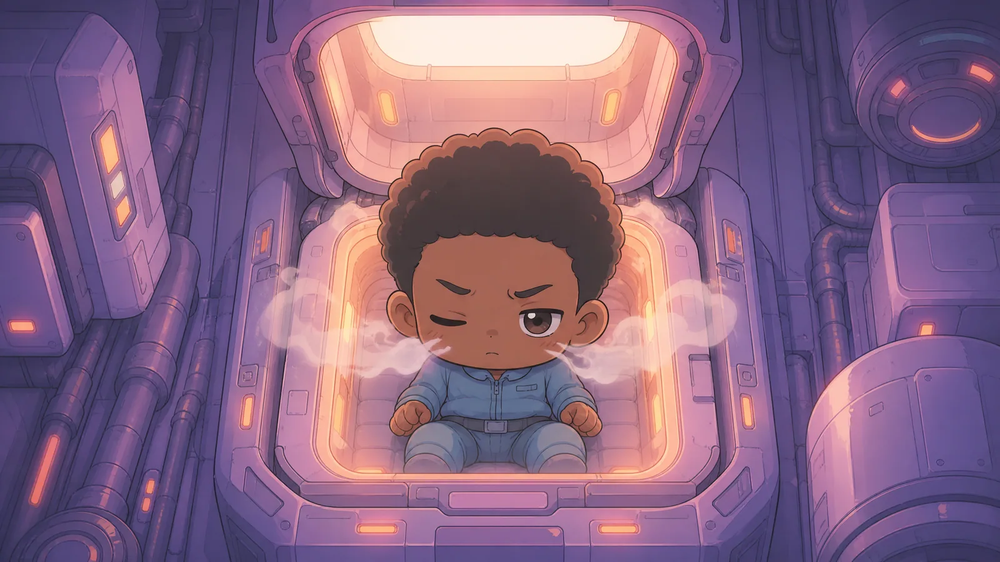
A lid unfolded above him. White light slammed down. Cold vapor crawled out of the capsule and over his face like curious fingers.
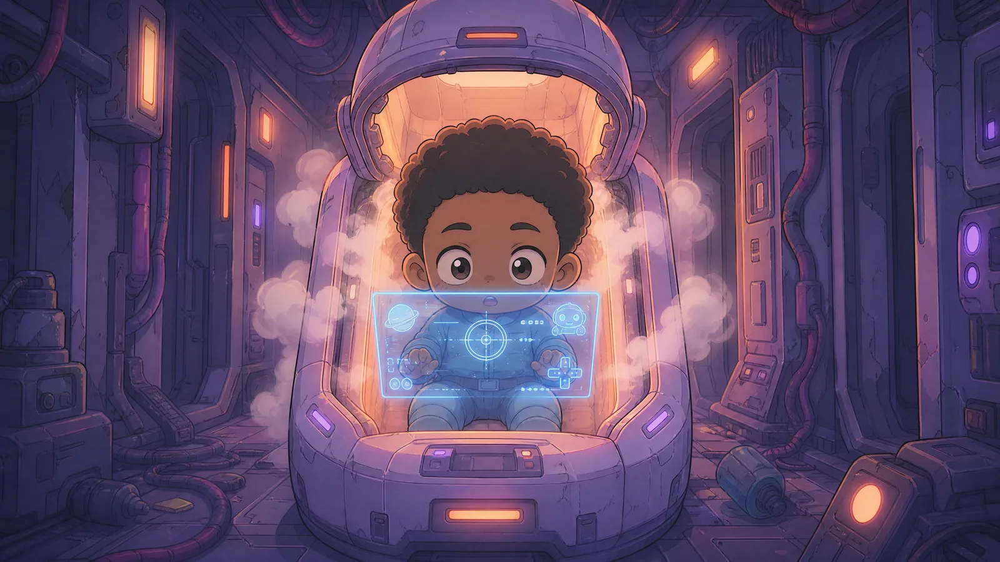
Blue text appeared between Max and the light.
It was not on glass.
It was not on a screen.
It was just there.
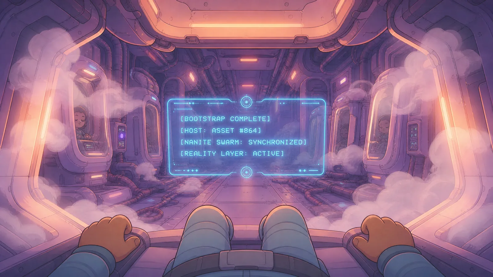
[BOOTSTRAP COMPLETE]
[HOST: ASSET #864]
[NANITE SWARM: SYNCHRONIZED]
[REALITY LAYER: ACTIVE]His mouth tasted like copper and freezer burn. His heartbeat showed up as a thin red line in the corner of the HUD, optional telemetry, as if his body were a service they could monitor but not own.
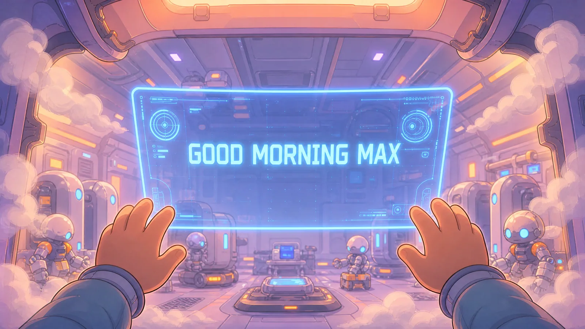
Another box.
[SYSTEM] Good morning, Max.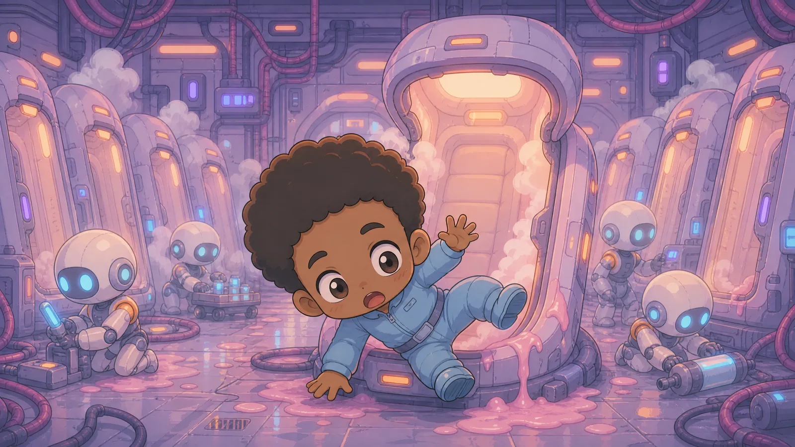
Max slapped at the air. The text stayed exactly where it was, as if nailed to the universe.

He sat up too fast, bounced off a restraint strap he hadn't noticed, and fell sideways out of the cryopod in a spill of thaw gel and dignity.
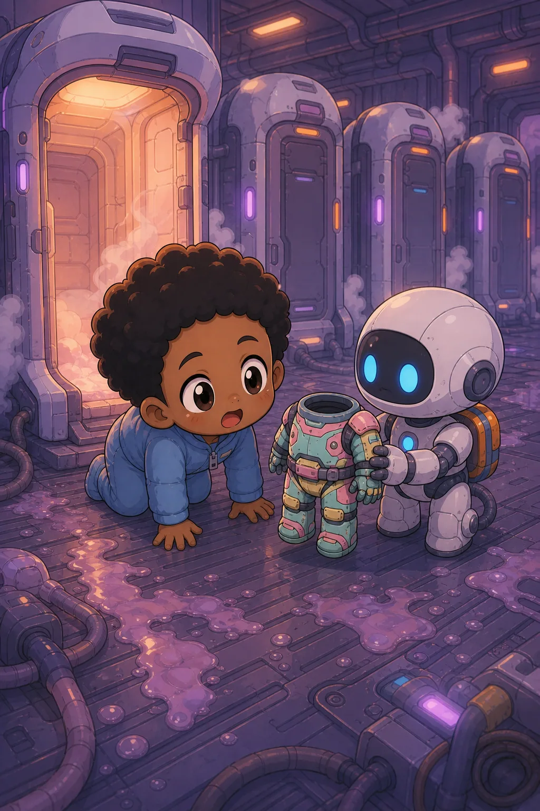
The floor was ribbed steel, freezing, and sticky with something that had dried years ago.
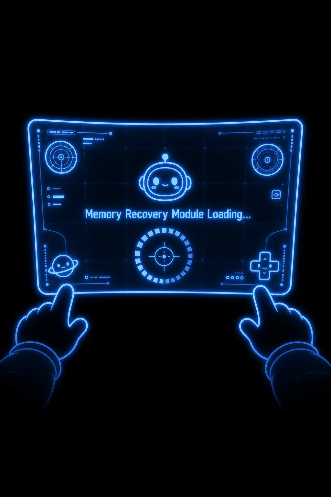
Max's body remembered things his mind didn't:
how to catch himself on an elbow,
how to curse in three languages,
how to throw up without choking on it.
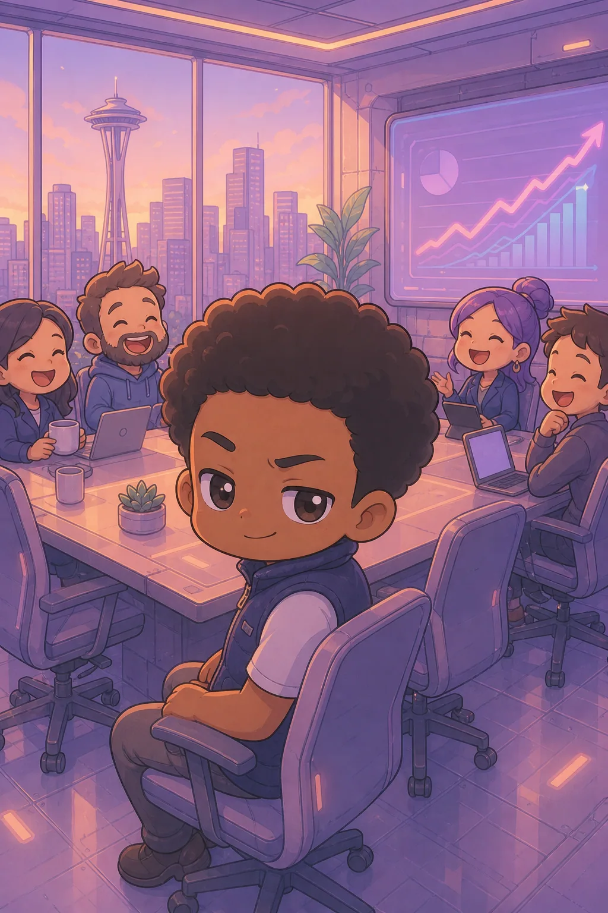
Memory followed, broken and ugly.
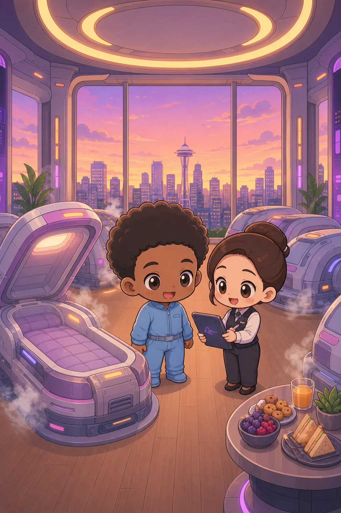
An office.
A morning meeting.
A roadmap.
A product manager saying, "We only need this to scale to fifty million users by Friday."
Max saying, "Then we need different laws of physics."
Laughter.
A contract packet.
A checkbox.
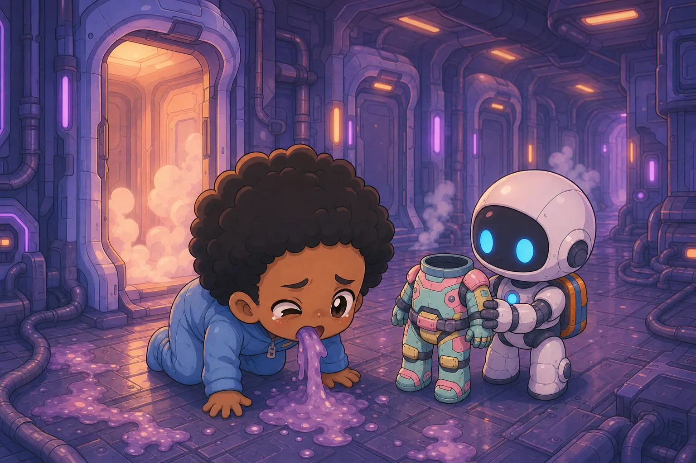
Max signed it grinning. Sleep through the bad years. Wake up after scarcity. Spend the rest of his life on plants and pickleball, with no roadmap and no boss.
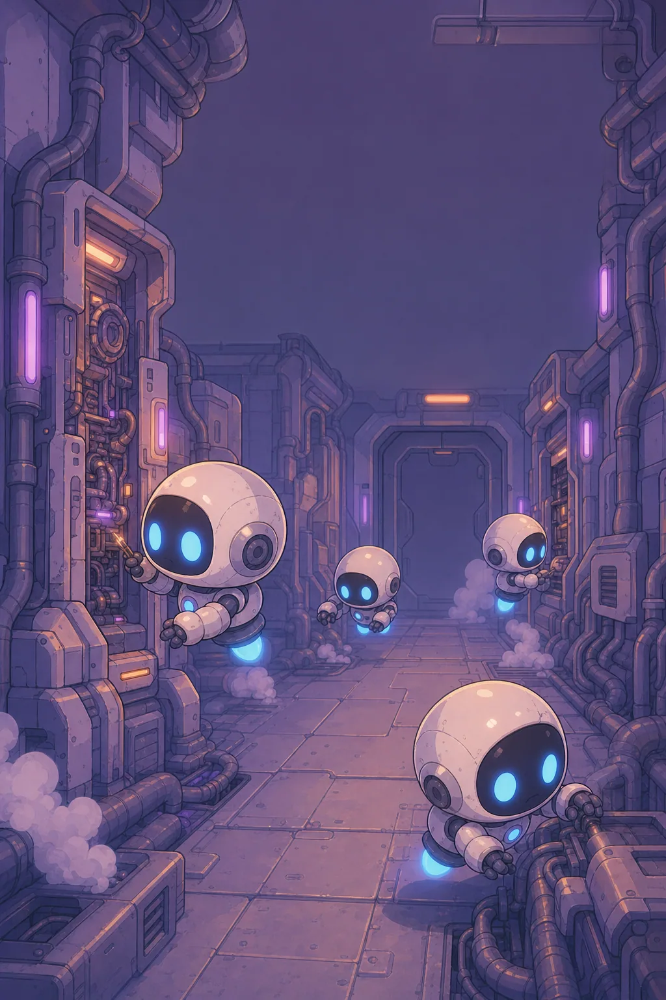
Max's stomach heaved. He rolled onto his side and vomited again...less gel this time, more acid, and watched the mess slide toward a floor grate that drank it without judgment. His hands shook until he had to press them flat to the deck to steady them.
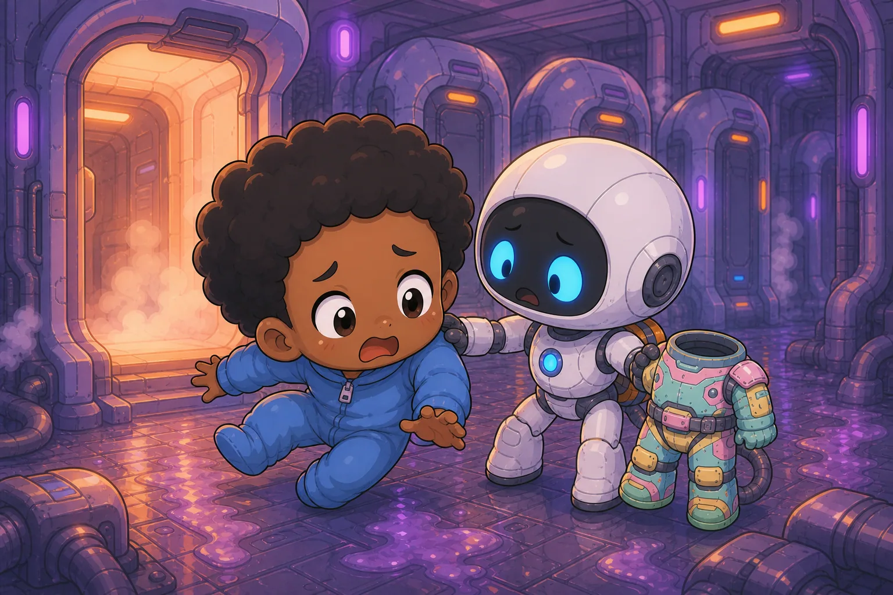
Somewhere in the wall, machinery clicked through a checklist only it could hear.
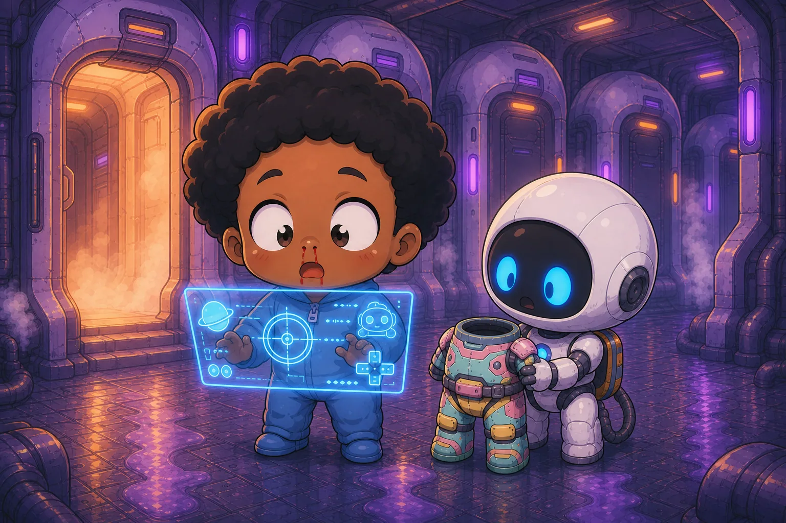
He tried to stand and failed once, twice, on the third try the robot helper reached out and caught him. His reflection in the chrome chassis of the bot was wrong in a way he couldn't figure out through the fog his mind was wrapped in. His own face, but the eyes moved a half beat later than he felt himself moving them, as if someone else were interpreting his nerve impusles and executing them with a slight lag.
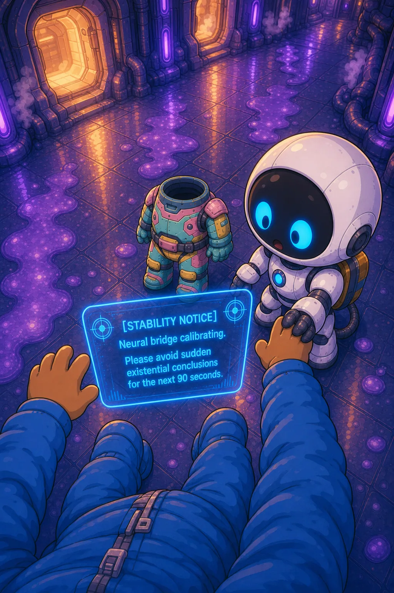
A thin line of blood ran from his nose and stopped halfway, as if the nanites couldn't decide whether bleeding was on-brand.
He laughed. It was harsh, strained and full of stress.
[STABILITY NOTICE]
Neural bridge calibrating.
Please avoid sudden existential conclusions for the next 90 seconds.Max wiped his face. The blood smeared, and then retracted, as if the nanites couldn't stand the mess.
The room speaker crackled alive.
"Welcome, Valued Asset #864! I am V.A.L.U., your Valued Asset Logistics Unit. On behalf of The Company, congratulations on your return to meaningful participation."
The voice was warm, polished, and weaponized.
"Where am I?" Max asked.
"You're asking amazing questions already! You are currently in Sector 7 Orientation Bay Delta-Three. Please remain calm while your new physical permissions initialize."
"My what."
A pulse went through Max's skeleton. Not pain exactly. More like every atom in his body checking in with management.
The blue UI erupted.
[CORE ATTRIBUTES DETECTED]
EFFICIENCY 11
LUCK 06
TECHNICAL 12
SPEED 09
LEVEL 1
[NEW RULESET APPLIED]
World interactions now mediated by licensed nanotechnology.Max stopped breathing.
"Licensed by who?"
"The Company."
"Of course."
V.A.L.U. continued in that same upbeat tone people used when announcing mandatory overtime.
"Before suspension, you interacted with legacy physics. Congratulations! You now have access to optimized physics."
Max laughed once. It sounded like a hiccup having a breakdown.
"Optimized physics?"
"Task outcomes are now influenced by your attributes, skill package, and stochastic opportunity events."
"Say that like you're not hiding a knife."
"Your world now behaves more like a game, Max. Isn't that exciting?"
For one terrifying second, it was.
Then the next box appeared.
[ACCOUNT STATUS]
OUTSTANDING DEBT: $1,000,000
MINIMUM PAYMENT SCHEDULE: ACTIVE
DEFAULT PENALTIES: ENABLEDMax pressed both hands against his faceplate-less head and sat very still.
"Did you just put a subscription on gravity?"
"That's an interesting metaphor."
"Did. You."
"Physics-layer access is provided as a debt-backed service."
Max stared at the nearest wall and tried to decide whether to scream again or start biting things.
A thin tooltip tried to appear on the wall's rivet line, then aborted:
[ERROR]
Explanation unavailable in your region.Max laughed, ugly and involuntary. "My region is here. I'm here."
"The Company uses flexible geography," V.A.L.U. said.
The wall answered by doing nothing, which was somehow worse.
There were seven pods in the room.
Six closed.
One open.
The open one was his.
One of the closed pods had spiderweb cracks on the inside of the viewport. Someone had etched words into the frost with a fingernail: DON'T SIGN AGAIN
Max swallowed.
On the pod beside it, different handwriting, tighter, angrier: THEY COUNT THE WAKE-UPS
Max didn't know who "they" were.
That was the point.
For a long moment the bay was too quiet. Not silent, machines never shut up completely, but the kind of quiet where you realize nobody human is breathing nearby.
Then a soft thump came from inside one of the sealed pods.
Not an alarm.
Not a speaker.
A palm, maybe. A shoulder. Something alive trying to make the sealed world notice.
Max went still. His skin went cold in a different way than the deck, moral cold, the kind that arrived when your brain finally admitted you were not alone in a room you had mistaken for furniture.
He crossed to the pod before he had decided to. Frost crawled the inside of the viewport. Through it, movement: not clear, not human-shaped yet, only the suggestion of someone close to the glass, breathing fog that smeared and re-formed.
Another thump. Harder. Urgent in a language older than interfaces.
Max lifted his hand toward the viewport.
V.A.L.U., still cheerful: "Please do not apply pressure to cryogenic enclosures. Thermal shock and seal integrity are shared responsibilities."
"I'm not…" Max's voice cracked. He swallowed and tried again. "There's someone in there. They're awake."
"Asset states are managed by licensed medical continuity," V.A.L.U. said. "Unauthorized intervention voids liability coverage and may trigger debt acceleration for all parties present."
Max's hand hovered an inch from the glass. He could feel the wrongness of the choice stacking: touch and become involved, or step back and stay allowed.
"What happens if they stay in there like that?" he asked.
"Stability protocols prioritize fleet throughput," V.A.L.U. replied, which was not an answer until you translated it: not your lane.
Another thump. Then a scratch, fingernails, he thought, and his stomach turned over.
Max pressed his palm flat to the viewport.
Cold bit through his skin. The HUD flashed once, ugly yellow:
[INTERFERENCE FLAG / MINOR]
Cryo enclosure contact logged.
Witnesses: 1 (you)"Remove your hand," V.A.L.U. said, tone unchanged and therefore worse. "Great instinct for compassion! Compassion is a premium workflow."
Max didn't move. "Open it."
"Opening requires authorization, tools, and a billing event you cannot currently afford," V.A.L.U. said. "Please proceed to onboarding. Meaningful participation reduces systemic distress over time."
Over time.
The person inside hit the glass again. Max leaned his forehead against the frost until the cold made his thoughts narrow.
He had no wrench. No override. No status in a building that treated humans like inventory. Back home, back when that word meant something, he would have called for someone, kicked up noise, refused to be the only witness. Here the witness was the thing they were trying to manufacture.
Max whispered, not to V.A.L.U., to the fog on the other side: "I'm sorry. I don't know how yet."
He peeled his hand away. The yellow flag stayed in the corner of his vision like a bruise.
His HUD offered helpfully:
[OPTIONAL OBJECTIVE]
Investigate unexplained audio.
Reward: Clarity
Risk: Narrative damageMax stared at Risk: Narrative damage until he wanted to scream. Narrative damage. Like the story mattered more than the meat.
He did not swipe the pane away fast. He read it. He let it land. Then he dismissed it because the alternative was standing in this bay until his debt owned his next heartbeat too.
The thumps didn't stop as he stepped back.
They didn't get louder either.
That was almost worse, learning the station's background volume for someone else's emergency.
"Can I leave?" he asked, and hated that it came out like surrender.
"Absolutely. Please equip your assigned EVA shell and proceed to Dock Ring C for onboarding validation."
Compartment door to the right opened with a hiss. Suit inside. White once, yellowed now. Chest patch: ASSET #864. Smaller text under it: RETURN IF UNATTENDED
Max pointed at the label.
"You people really go all in on the branding."
"Consistency builds trust."
"No, lawsuits build copywriting."
He climbed into the suit because naked defiance had historically bad outcomes.
The interior smelled like ozone and someone else's sweat, which was a special kind of intimacy Max had never asked for. Joints squeaked. Seals groaned. The gloves were half a size too small, the kind of too-small that turned your hands into angry starfish.
When the chest plate clamped shut, something clicked behind his sternum, not bone, not gear, a third category.
[INTERFACE]
EVA shell bonded to licensed substrate.
Comfort: Suboptimal
Survivability: Improved
Autonomy: Still hilarious"Why does it feel like I'm wearing my own ribs on the outside?" Max asked.
"That's the integration layer," V.A.L.U. said. "Your nanites are learning the suit's tolerances. Think of it as onboarding for hardware."
"I think of it as a hostage situation with better branding."
Helmet on. Visor down.
The world didn't change.
It locked in.
Colors sharpened. Edges gained faint outlines, like he could see stress in every join. Sound flattened into channels: his breath in one ear, V.A.L.U. in another, the station's groan cleaned into a separate track, too tidy to feel honest.
Max took a step.
His foot came down a millimeter early, then corrected, a tiny stutter-step that made his stomach lurch.
"Am I drunk?" he asked.
"You are synchronizing," V.A.L.U. said. "Your inner ear is still learning the suit."
"Teach it faster."
"Request logged."
Blue panes stacked in front of his eyes in perfect alignment with the world.
[PASSIVE UNLOCKED] BOUNDARY SENSE
You perceive pressure gradients, weak structures, and probable failure lines.
[ACTIVE UNLOCKED] VECTOR NUDGE (TIER 0)
Spend 5 Energy to alter local momentum in a hand-sized field.
Warning: Misuse may result in self-collision.Max flexed his hand.
A loose bolt on the floor twitched toward him, skittering in a tiny arc that absolutely should not have happened.
He froze.
The bolt rolled to a stop against his boot.
"Did I just... Jedi a screw?"
"You performed a valid Tier-0 momentum adjustment," V.A.L.U. said. "Great first cast!"
"Don't call it a cast."
"Action accepted. Terminology updated: Great first productivity event!"
Max stepped toward the door. It irised open before he touched it.
The corridor beyond was dim and long, lit by strips of failing LEDs and intermittent emergency glyphs. The walls were covered in Company posters.
Max walked anyway.
Every ten meters brought a new flavor of wrong.
A kiosk labeled FREE WELLNESS with a screen cracked down the middle. The cartoon mascot on the display smiled with teeth that didn't fit its face. Under the smile, scrolling text: STRESS IS A CHOICE / CHOOSE PERFORMANCE
Max kept walking.
A maintenance drone hung from the ceiling like a dead bat, cable wrapped around its chassis, LED eye still blinking a slow SOS nobody was answering.
Footprints in dust, mag-boot treads, overlapping, going both directions. Some stopped abruptly, as if the people wearing them had been deleted mid-stride.
Max's brain tried to file all of it under props because that was easier than this is your life now.
It didn't work.
Memory intruded again, not as images, as habit: coffee gone cold, a monitor's glare, the small wrongness of a problem you swore you'd fixed yesterday. The relief when it finally worked. The heavier relief when nobody got hurt because it didn't.
He'd spent years making machines understandable.
Now the machine was making him understandable, and the thought crawled up Max's spine like cold water.
A side bay opened as he passed, automatic, stuck sensor, and inside, rows of empty harnesses swayed gently, as if a crowd of invisible people were still queued for something they never got to do.
[CONTEXTUAL TIP]
Curiosity drives innovation!
Innovation drives liability!"Shut up," Max whispered.
V.A.L.U.: "I'm sorry, I didn't catch that. Did you say 'more tips'?"
"No."
"Logging 'no' as enthusiasm."
Ahead, a figure in a stained EVA suit leaned against a bulkhead, faceplate mirrored. Not moving. Not waving.
Max slowed.
The figure didn't react.
Max lifted a hand, hello, maybe, or stop, or please be human, and the mirrored visor caught his own distorted reflection: a smear of blue UI, a mouth opening.
The figure pushed off the wall and walked away down a branching corridor without a word.
Not hostile.
Not helpful.
Just occupied, in the way people got when they'd learned that eye contact was a billing event.
Max watched until the stranger vanished.
His HUD helpfully annotated:
[SOCIAL ENCOUNTER]
Outcome: Ambiguous
XP: +0
Mood: Worse"Thanks," Max muttered. "Very human."
ALIGN WITH OUTCOMES.
DEBT IS A RELATIONSHIP.
YOUR LIMITATIONS WERE REMOVED FOR YOUR CONVENIENCE.
Every ten meters, another cryo bay.
Some empty.
Some occupied.
Some not fully shut.
On one fogged pod, someone had written with a grease pen: IF YOU SEE BLUE TEXT, RUN
Max walked faster.
His HUD kept feeding him things he hadn't asked for.
[MICRO-QUEST GENERATED]
Stand up without passing out.
Reward: +1 XP"Stop gamifying my nervous breakdown."
No response from V.A.L.U. for almost three seconds.
Three seconds was long enough to feel intentional.
Then:
"Your feedback has been logged as 'spirited.'"
Dock Ring C opened ahead, vast and skeletal.
Space spilled through armored windows: black, star-pricked, and full of drifting wreckage. Hulls split open like dead whales. Cargo frames tumbling end over end. Rotating shadows the size of neighborhoods.
And in the middle, a floating 4x4 grid of hard-light slots.
Sixteen boxes.
Four occupied.
One flashing amber.
A rotating holo-banner read: CLAIM BOARD // LIVE ASSET AUCTION ZONE
The ring smelled like hot metal and cold vacuum pretending it didn't want to kill you, ozone, lubricant, burnt insulation, and underneath it all the sterile sweetness of air recyclers working too hard.
Sound came in layers Max hadn't learned to parse yet: the bass thrum of mag-clamps, the mosquito whine of attitude thrusters on distant tugs, the irregular clang-clang-clang of something loose somewhere in the station's ribs, forever announcing itself.
Workers moved in efficient arcs, faces half-hidden behind visors. Nobody made eye contact for long. Eye contact cost something. Max could feel it in the way his HUD tried to tag each passerby and kept returning UNKNOWN / INSUFFICIENT PERMISSION like the universe was running a security and permissions check on everything he looked at for longer than a few seconds.
A gantry crew wrestled a cargo pallet toward a lock. One of them laughed, a real laugh, ugly with relief, and then flinched as if the sound had tripped an internal alarm.
Max's Boundary Sense pinged without asking, a faint red seam ghosting along a support strut overhead. Not danger now. Potential danger.
[PASSIVE NOTICE]
Structural fatigue detected in non-critical member.
Recommended action: Report to maintenance.
Alternate action: Pretend you never saw it.Max stopped.
People flowed around him, shoulders, carts, muttered apologies that weren't apologies, and for a second he was back in a life that still had weekends, watching someone click ignore on an alarm because downtime cost more than risk. The parallel was obscene. It arrived anyway.
He could flag it. That was what a person did when the world still pretended safety was a shared goal.
He could also read the room: nobody else was looking up. Not because they were stupid. Because looking had a price.
"VALU," Max said quietly. "If I report that strut, what happens to me?"
"A virtuous impulse," V.A.L.U. said. "Reporting routes through maintenance ticketing. Thawed assets may be invited to provide witness statements. Witness statements can become schedule commitments. Schedule commitments that overlap hazard windows may affect debt pacing."
Translation, ugly and simple: speak up and we'll find a way to bill you for caring.
Max watched a worker glance at the same red seam, then look down at their boots as if the deck had become fascinating.
He thought of the pod. The palm on glass. The yellow flag.
He did not report the strut.
He hated that he could name the choice and still make it.
"There's an alternate action," he whispered, no joke in it now.
V.A.L.U., pleased: "Autonomy is a spectrum!"
Max kept walking toward the rail. Each step felt like a small thing he would have to carry later. He told himself he would come back to it when he wasn't one day old and a million dollars poor.
The lie tasted familiar. That was the part that scared him.
Through the armored glass, a tug drifted past, lights blinking a pattern that looked almost like language. For a second Max thought the pattern spelled something, HELP, maybe, or SALE, and then the tug rotated and it was just lights again, indifferent as stars.
The claim grid hovered in the middle of the dock like a holy artifact nobody was allowed to touch with bare faith. Each slot had a tiny ticker beneath it: codes, percentages, timestamps, words Max half-recognized from finance and half from games.
LOOT EXPECTANCY.
RISK BAND.
CLAIMANT.
LIEN STATUS: PENDING.
It wasn't a spreadsheet.
It was a spreadsheet wearing a cathedral.
Two figures stood near the rail.
One was broad-shouldered with a shaved head and a welding torch hanging from one hip like a talisman. The other was tall, armored, still wearing half a thaw blanket around one arm like he'd forgotten to finish waking up.
Both turned as Max approached.
The tall one tilted his head. "New."
The woman took one look at Max's stutter-step and said, "How bad's the suit-sickness?"
"Like I'm seasick on dry metal," Max said. "Vision lags. Floor doesn't."
"Congrats. Means you're syncing."
She stuck out a glove. "Munch."
The grip was firm through the suit, practiced, the kind of handshake people used when they were afraid to let go too fast or hold on too long.
"Max."
He almost added a job title out of habit, proof he used to be someone the world categorized cleanly. The words died. Titles were a language this place didn't honor except as leverage.
The tall one didn't offer a hand. He thumped his chest plate once, a dull gong through the EVA shell. "Maxine."
Up close, Maxine looked like he'd been filed down by years of small violences: a scar at the jaw where a seal had failed once, eyes that stayed in scan mode even while he was still.
V.A.L.U. slid into all three helmets, voice bright as disinfectant.
"Cross-asset comms enabled! Collaboration improves outcomes!"
Maxine's jaw flexed. "Mute."
The cheer cut off mid syllable, replaced by a thin silence that somehow felt expensive, like the station was still billing for the bandwidth.
Max's throat was dry. He could still smell thaw gel on himself if he breathed wrong. He could still feel the pod's glass against his palm if he let his mind drift. He kept his eyes on Munch's visor instead.
"They already gave you actives," she said. Not a question.
"Vector Nudge."
Maxine's eyebrows rose, a real reaction, quickly buried. "Tier zero?"
"Tier zero," Max said.
"Good. Bad. Both." Maxine glanced at the claim board as if it might overhear. "Good because you can move mass without begging. Bad because you'll try it once too often and the System will invoice your nervous system."
Munch studied Max's stance, the micro-lag, the weight on the wrong foot. "Bone Mend?"
"No."
"Then you didn't wake up broken enough for their favorite punishment heal." Her mouth tightened. "Don't romanticize that. Bone Mend feels like being knitted back together by angry bees."
Max almost laughed. The laugh died too. "A few hours ago I was in a bay with someone hitting the inside of a sealed pod. I couldn't open it. I…"
He stopped. Sharing it aloud made it sound like begging for absolution.
Munch didn't offer absolution. She offered information.
"If you tell that story to the wrong auditor, they'll mark you instability and sell you a wellness package." Her voice softened half a degree. "If you tell it to us, we mark you human and adjust how fast we yell at you when you freeze."
Maxine grunted agreement. "We don't do trust on day one. We do proximity. You stand where we stand. You don't steal air. You don't 'save' people in view of drones unless you want three new debts and a compliance sermon."
"I can't afford heroism," Max said.
"You can't afford lunch," Munch replied. "Welcome to the median. Debt means you're still in the game. Zero debt means you're dead, management, or lying."
"Which are you?"
She held his gaze two seconds, then looked away, toward the board, toward the wrecks, toward anything that wasn't an answer.
Maxine tapped the claim board. The hologram rippled like disturbed water. "Numbers eat attention. Attention eats judgment. Don't feed them."
Max tried anyway. The amber slot pulsed like a slow heartbeat.
[ACCESS NOTE]
Full claim metadata requires clearance.
You have: THAWED"What's THAWED clearance?" Max asked.
"The bottom," Munch said. "But it's still clearance. Means they want you alive enough to work."
The amber slot on the claim board pulsed harder.
A derelict drifted into relative position: narrow, ugly, one side peeled open like a tin can.
Max's HUD auto-expanded.
[TARGET ACQUIRED]
UNREGISTERED DERELICT C-17
SALVAGE PROBABILITY: VARIABLE
SURVIVAL PROBABILITY: NON-BINDING ESTIMATE"What's that mean?" Max asked.
Munch replied without looking away from the board. "It means the percentages lie politely."
Maxine cracked his knuckles. "You piloting?"
"I just woke up."
"Exactly. You still have optimism."
Before Max could answer, the world hitched.
A tremor rippled through the station ring. Alarm strips flashed red-white-red. Somewhere below, something massive slammed into something else and did not apologize.
The board flickered.
The amber derelict marker flashed to red.
[HAZARD EVENT]
DEBRIS SHEAR FRONT INBOUND
TIME TO IMPACT: 00:00:18"Move!" Munch shouted.
People appeared out of side corridors, running in mag-boots, hauling crates, cursing at gods and payroll departments. A drone cart spun free and pinwheeled across the deck.
Max stepped toward cover, slipped in thaw gel he had tracked from his pod, and watched the drone cart tumble straight toward Munch's legs.
No time.
No plan.
He reached out on instinct and felt the new thing in his body respond.
Not muscles.
Not nerves.
Something smaller and meaner and distributed.
The UI slammed open:
[VECTOR NUDGE]
Target mass exceeds recommended envelope.
Override? Y/NMax hit yes with his eyes because the thought barely formed before it happened.
The air in front of his hand folded.
The cart jerked sideways mid-spin as if yanked by an invisible hook, smashed into a stanchion, and exploded in a cloud of bolts and profanity.
Munch stared at the wreck.
Then at Max.
For a beat she didn't speak. Max saw her do the math anyway, what the cameras saw, what the ring would log, whether gratitude would sound like witness tampering in the wrong mouth.
"Okay," she said finally, voice tight. "You just spent body budget on me."
"I didn't…"
"You did." She cut him off without cruelty, just urgency. "Don't make it noble. Noble gets edited. That was physics and panic. Useful physics. Dangerous panic."
Maxine was already scanning the deck for secondary motion, drones, anything that loved a hero clip. "Cart path was logged," he muttered. "So was your hand. They'll call it competence if they like you. They'll call it unlicensed variance if they don't."
Max's stomach dropped. The pod had punished him for a palm on glass. Here he'd moved mass in public and the rules hadn't caught up yet, that wasn't safety. That was lag.
Munch stepped closer, helmet near his, private comm only. "You want to carry the bay with you? Carry it quiet. The ring doesn't forgive witnesses who keep reminding it they have a conscience."
Max's visor flashed crimson.
[ENERGY -18]
[STATUS] NEURAL FEEDBACK
Symptoms: shaking, nausea, existential regret"I didn't know that would work," Max said.
"Nobody knows," Maxine said. "You try. The System decides what the try costs."
The shear front hit the outer dock shielding with a roar that shook the ring. Through the window, a storm of glittering fragments scraped past, each one moving fast enough to end arguments permanently.
Max's hands locked on the rail until the metal stopped humming. For eighteen seconds the universe was only noise and light, no ledger, no quips, no clever language that could pretend this was a game with fair rules.
Then it was gone.
Silence rushed in, broken only by breathing and one far-off scream that cut off abruptly.
For a few seconds, Dock Ring C held still: the ugly pause after violence when every person checks whether they're still whole and whether pretending calm will keep them off a list.
A woman sat down hard against a bulkhead, helmet off, blood running from her hairline into an eyebrow. She didn't cry. She laughed once, too high, and then clamped a hand over her mouth like laughter was contraband.
Someone else vomited into a floor drain with the efficient posture of a person who'd practiced.
Max went toward the woman before the thought finished forming, three steps, then Munch's glove on his forearm, firm as a brake.
"Med routes the injured," she said, voice low. "If you kneel there, you become a witness node on a claim form. Witness nodes get pulled."
Max shook his head once, stubborn. "She's bleeding."
"She knows," Munch said. Not cruel. Tired. "If you want to help, you stay visible and you don't give them a reason to pretend this was your incident."
The woman's eyes flicked up. For half a second Max saw recognition, not of him, of the whole obscene math: strangers in suits, hazard windows, the station's appetite for paperwork that ate people.
"I'm okay," the woman lied, because that was the local dialect.
Max's throat tightened. Okay was what you said when not okay would cost someone else their shift.
A child-sized drone rolled up to Max with a tray of sealed packets labeled HYDRATION + COMPLIANCE.
Max stared at it.
The drone chirped.
[OFFER]
Accept complimentary electrolytes?
Decline is logged."Logged where?" Max asked.
The drone did not have answers. The drone had packets.
Max took one packet and held it out to the woman on the bulkhead.
She stared at his hand like kindness might be a trap.
"Take it," Max said. "Please."
She took it. Her fingers were shaking. She didn't say thank you, thank you was a receipt here, but she cracked the seal and drank like the water was the only honest thing left in the ring.
Max took a second packet for himself only after she had hers. The seal broke with a hiss that sounded weirdly personal.
V.A.L.U. returned at full brightness.
"Great emergency adaptation, Asset #864! You have demonstrated initiative under dynamic volatility."
The word initiative stung. He had taken initiative twice since waking, hand on glass, packet offered, and both times the system had found a way to make him feel small for it.
A new pane appeared.
[SKILL LEARNED]
IMPROVISED DEFLECTION (Rank 1)
When using VECTOR NUDGE during hazard windows, gain +5% control.Max sagged against the rail.
"So this is real."
Munch gave him a look that wasn't unkind.
"It's real enough to kill you."
"Do people ever get used to this?"
Maxine answered first. "No. You get quicker at moving. Sometimes you get quieter inside. That's not the same as used to it."
The claim board stabilized.
Red marker slid back to amber.
Munch jerked her chin at it. "We can stand here while your adrenaline drains and your HUD starts suggesting 'wellness,' or we can launch before the ring assigns you a penalty for standing still too long."
"Penalty for standing still."
"Everything times out," Munch said. "Even breathing, if they can meter it."
Max's HUD popped again.
[PROMPT]
Accept Introductory Depth Dive?
Rewards:
- Unknown salvage
- XP
- Continued legal personhood (conditional)"That last line's a joke," Max said, and heard how thin it sounded, humor as a door he could hide behind while his body still remembered the pod and the yellow flag.
Nobody answered.
Which was answer enough: the dive wasn't a choice the way lunch was a choice. It was a choice the way gravity was a choice.
A second pane tried to open behind the first, flickering, half-formed, like breath on cold glass.
[BILLING PREVIEW / RESTRICTED]
OUTSTANDING: [REDACTED]
CYCLE: [REDACTED]
MINIMUM DUE: [REDACTED]
CONSEQUENCE TREE: [REDACTED]
FOOTNOTE: Compliance is a lifestyle.The redactions weren't black bars.
They were holes, as if the text had been removed from reality, leaving empty shapes your eyes kept trying to finish.
Max felt cold without temperature changing.
"Why show me this if you're not going to show me?" he asked.
V.A.L.U., softly: "Awareness improves performance."
"That's not an answer."
"It's a behavioral nudge."
Max swiped the broken pane away. It resisted, stuck for a heartbeat, then vanished with a sound like a door locking somewhere far away.
Max looked at space.
At the wrecks.
At the endless machine graveyard.
At the grid pretending chaos was inventory.
At the tiny reflection of his own face in the visor: bloodshot eyes, a split lip, and the expression of someone told he was expendable before he'd learned the room's layout.
Something else surfaced from memory then, sharp and sudden.
Not an office this time.
A rooftop.
Rain.
A friend saying, "If you had one superpower, what would you pick?"
Max answering, "Fixing what's broken before anyone admits it's broken."
Both of them laughing like that was impossible.
His finger hovered.
Accept wasn't courage. It was the only door that didn't read default yet. He thought of the person behind frost, still thumping, still unanswered, and hated that his mind reached for them like leverage. It wasn't leverage. It was a wound looking for a pattern.
He touched the Accept prompt.
The deck under Max's boots vibrated as clamps engaged somewhere below. A skiff rose from a launch cradle, scarred and asymmetrical. Painted on the side in flaking letters: SECOND CHANCE (LEASED)
The name made him want to spit. Second chances weren't leased. Leases were collars with marketing.
V.A.L.U. said, "Opportunity framing improves retention."
Max didn't answer. Some sentences didn't deserve air.
Munch swung into the skiff first. Maxine followed, ducking under a bent support strut. Max climbed in last, every movement still a fraction out of sync with his body.
Harness locked.
Canopy sealed.
The station fell away.
[DEPTH DIVE: INITIALIZING]
ROUND 1/10
CARDS AVAILABLE: 3
ENERGY: 100/100
ACTIVE MODIFIERS: ADAPTIVE PHYSICS, BEGINNER MERCY (if available)"Beginner mercy?" Max asked.
Maxine from the rear seat: "Sometimes the System shaves an edge so you learn the shape of the blade."
"And if it doesn't?"
"Then you learn bleeding."
The skiff punched into open dark.
Vibration crawled up Max's spine, engines, frame harmonics, the subtle wrongness of a vehicle that had been repaired until it was mostly patch. Through the canopy, stars didn't twinkle. Stars held. They were the only honest things in the sky.
Munch muttered coordinates under her breath, not to Max, to herself, each number a small refusal to let the trip become myth. When she slipped once and repeated a digit, she winced, human enough to hate her own fear.
Maxine watched the dark the way you watched a hallway after a fight: like it might still decide to finish what it started.
Max's hands found controls that shouldn't have made sense, soft holographic sliders, tactile toggles that clicked like mechanical keys, a stick that moved the universe a little when you breathed wrong. Muscle memory kept inserting itself where knowledge should have been. It should have felt like help. It felt like evidence someone had used his sleep as workspace.
He didn't thank the intrusion. He didn't trust it. He used it anyway.
The derelict loomed ahead, turning slowly, a broken spindle with puncture scars and flayed wiring. Its hull stenciling was half gone.
MOU---NG SH---
Like even the name had tried to leave.
Closer, it stopped being a silhouette and became texture: ablative scorch in tiger stripes, windows blind with soot, a long rip in the hull where internal pressure had peeled the metal back like orange rind. A ribbon of debris orbited it, bolts, chips of ceramic, what might have been a tool bag, what might have been a shoe.
Boundary Sense painted hairline fractures in faint rose-gold, pretty and obscene.
[ANALYSIS / LOW CONFIDENCE]
Object age: Indeterminate
Last crew signal: Classified / Missing / Funny story
Recommended emotional stance: Professional dissociation"Professional dissociation," Max read aloud. "They list that like a virtue?"
"That's survival," Munch said.
The skiff matched velocity with a bump that rattled Max's teeth. For a heartbeat he was weightless inside weightlessness, stomach floating, brain a step behind his body.
Then mag-locks grabbed and the universe snapped into place.
Max dragged the first card without understanding why he already knew how.
[SCAN]
Lock established.
Ownership token injected.The second card.
[REPAIR]
Microdrone patching sequence deployed.
HULL +16
TECHNICAL CHECK: SUCCESS
XP +11For a moment the derelict's wound looked less like metal and more like meat: layers, fibers, wet gleam where cold should have made everything dry. Microdrones stitched plates across the gash, sparks writing brief constellations that died as soon as they were born.
Through the gap, just for a second, Max saw movement inside. Not a person. Not quite.
A shimmer, like heat haze in a room that shouldn't have heat. A shape that could have been a cable bundle or a spine. The HUD tried to label it and produced only:
[ENTITY]
Classification withheld pending morale impact.Max blinked and it was gone.
Munch said, too calmly, "Eyes on the board."
"I saw…"
"You saw noise," Maxine cut in. "Noise gets people dead."
Max's mouth went dry.
The skiff's comms picked up a whisper anyway, maybe interference, maybe nothing, faint enough to pretend it wasn't real:
…please… …inventory… …return…
Then an alarm. Not from the skiff. From inside Max's jaw, like someone had hidden a siren in his teeth.
[EVENT DRAW]
STRUCTURAL CASCADE
Incoming failure in 8...7...6...Max grabbed the rail.
"Why is countdown in my mouth?"
Munch snapped, "Feedback channel bleed. Ignore it."
"Hard to ignore."
"Then feel it and don't obey it." Her voice was steady in a way that cost something to maintain. "The System loves putting the alarm inside your skull. Makes you think your body is the enemy."
Metal screamed outside as a beam peeled off the derelict and cartwheeled past the skiff's canopy close enough to leave sparks.
The third card glowed: EXTRACT. The frame around it pulsed warning red.
Somewhere behind the text, Max saw the debt line, white and immovable: $1,000,000. Not a number. A leash.
"If I pull out now," Max said, "do I keep anything?"
"Maybe," Maxine said.
"That's not an answer."
"It's the only honest one."
Max played EXTRACT.
Time elongated.
The UI dimmed everything except one spinning die icon.
[BREACH CHECK]
Rolling...The skiff's hold motors whined. Clamps bit into the derelict's flank like teeth. Somewhere in the math of it, Max felt the nanite layer try to "help", a nauseating sensation, like his nervous system had been handed a second steering wheel and both drivers disagreed.
[ADAPTIVE PHYSICS NOTICE]
Yield optimization engaged.
Your body may experience temporary certainty."Certainty?" Max said.
"Marketing," Munch replied, eyes on the board.
Outside, metal groaned. Not the dramatic groan of storybooks, the tired groan of a structure that had been holding on out of spite.
Maxine leaned forward, voice low. "If it goes red, don't watch the window. Watch your hands. You can still fly blind for three seconds."
"Three seconds isn't…"
"It's enough."
The die wasn't innocent. It was theater dressed up as chance, something you were meant to watch until you believed it was fair.
Still, he watched.
Still, his heart tried to sprint.
Max thought, absurdly, of signatures and sealed doors.
How there was always a breath after you committed where every outcome still felt possible:
it holds,
it fails,
someone else pays.
He thought of polite rooms where everyone agreed to call it fine while the alarms kept flashing.
He thought of the moment you realized the failure wasn't a mistake. It was the design.
The spinning icon stuttered, briefly displaying something that wasn't a number, an eye, a seal, a word in a font that shouldn't exist, and then it snapped back to innocence so fast Max wondered if terror had invented it.
[ROLL IN PROGRESS]
Integrity check…
Morale check…
Narrative coherence check…"Narrative coherence?" Max whispered.
"Ignore," Munch said.
"Ignoring is hard when the universe won't stop narrating itself."
The skiff's lights dimmed as power routed into the extract rig. The canopy polarized automatically, turning the world into a smear. Max's visor compensated, which meant his brain got two versions of reality at once, polarized glass insisting one truth, the HUD insisting another, until his stomach rolled with the mismatch.
Sound narrowed to a high thin note, like a hearing test climbing until you lied.
Maxine's hand appeared on Max's shoulder. Heavy. Steady.
Not comfort.
Ballast.
Max realized he was holding his breath.
[BREACH CHECK]
Rolling...The die landed.
[RESULT]
67/100
Threshold 35
BREACH AVOIDEDThe whole cockpit exhaled.
For a heartbeat, nobody spoke.
Even V.A.L.U. stayed quiet, which felt less like respect and more like a creditor pretending not to count interest.
Max's hands shook on the controls. He pressed them flat to his thighs until the shaking became a smaller lie.
Outside, the derelict's wound stopped flexing. The microdrones detached and zipped home in a tidy line, good little soldiers returning to a pocket universe. The shimmer inside the hull did not reappear.
Munch let out a breath she must have been holding the whole time.
Maxine muttered something that could have been prayer or profanity, same syllables, different intent.
[POST-ROLL SUMMARY]
Breach event: Suppressed
Causal branch: Retained
Emotional residue: User-dependent
Suggested coping: Hydration + denial"User-dependent," Max read. "Christ."
Cargo clamps slammed.
Something heavy locked into the hold.
The skiff's deck vibrated as mass transferred, a sensation that traveled up Max's legs and settled in his teeth. It should have felt like victory. It felt like signing something you hadn't read.
[SALVAGE SECURED]
+Scrap
+Metal
+Tech
XP +24A second later, a smaller notification tried to hide beneath it, ashamed:
[ITEM DISCOVERED]
Unlabeled data shard (corrupted)
Origin tag: DELTA-7 / LOGISTICS / WITNESS_CHAIN
Signature: [unreadable]
Storage: Personal inventory
Action: Defer / Ignore / Regret laterMax almost tapped Defer automatically, old habit: leave the problem untouched, hope it aged out, then stopped.
He read the origin tag twice. Delta-7 meant nothing to him yet. It read like a department code from a company he had never worked for, attached to a witness chain he had never agreed to be part of.
"What's a data shard?" he asked.
Munch's gaze flicked to the corner of Max's HUD and held there for half a second too long, the same kind of steadiness her hand had kept on the tablet during the shear front. Steadiness was a decision, here.
"Sometimes the wreck remembers something it shouldn't," she said. "Don't open it on the dock."
"Why?"
"Because curiosity is taxable." She paused, then added it lower, like she was negotiating with herself: "And sometimes the thing that remembers doesn't want to be a thing. Don't open it anywhere I can see."
Max heard the old world in that phrase, the way companies turned attention into product, and felt the new world underneath it: here, tax wasn't metaphor. It was a line item that could reach into your sleep.
Then the follow-up pane, clinical and cheerful:
[ACCOUNT UPDATE]
OUTSTANDING DEBT: $1,000,000
PAYMENT WINDOW: 2 RUNS REMAININGMax stared until his vision stuttered.
"I bent momentum with my hand, almost got atomized by workplace weather, and my balance didn't move one dollar."
Maxine said, "The million isn't a scoreboard for today's shift. It's a leash length. They let you run so you don't notice the knot."
The skiff turned back toward Dock Ring C.
The ride home was worse than the ride out.
Without adrenaline, Max felt every ache: neck, jaw, a band of pressure around the ribs where the harness had tried to keep his body from becoming a projectile. The neural feedback had faded to a dull hum, like tinnitus behind the eyes.
The shard notification stayed at the edge of his vision, small, smug, waiting. Deferring it didn't make it harmless. It only postponed the moment he'd have to decide whether curiosity was worth another kind of tax.
Munch checked a readout and exhaled through her nose. "Hull stress nominal. Cargo secure. You didn't void the introductory warranty."
"There's a warranty?"
"There's always a warranty," Maxine said. "Never in your favor."
Through the canopy, Dock Ring C swelled until it stopped being a destination and became a mouth: docking lights strobing in patterns that probably meant something to people who'd learned the language. A traffic controller's voice clipped in and out of the comms, pure procedure, no nouns that mattered.
Clamp lines reached for him like mechanical fingers.
Max watched a crew hook the skiff and thought, absurdly, of two procedures colliding, each insisting it was fine while the hull told a different story.
The skiff kissed the cradle with a jolt that rattled loose something in Max's chest. Relief, maybe. Or another piece of the old world falling off.
Behind them, the derelict continued to rotate in silence, as if none of this had mattered.
Ahead, station lights bloomed in concentric rings, beautiful and indifferent.
A dock worker rapped twice on the canopy with a magnetic knuckle, tok tok, and made a rotating gesture: hatch cycle, now. Through their faceplate, their expression was flat in the way that meant they'd seen too many new assets come back wrong.
Max gave a thumbs-up.
The worker didn't return it.
V.A.L.U. pinged again.
[NEW CONTRACT AVAILABLE]
CRYO WAKE AUTHORIZATION
Cost: 1 Power Cell + additional debt
Outcome: expand workforce capacityMunch swore under her breath.
"Do not touch that tonight."
"Why?"
"Because the first time they offer you help, they're selling you a staircase with no top floor."
Max watched the contract pane hover, patient as a spider.
Then dismissed it.
For now.
The skiff docked hard.
Clamps bit.
Canopy unsealed.
Air hit Max's face, recycled, oily-sweet, colder than the suit's interior. Sounds rushed back in a wave: announcements layered over announcements, none of them meant to be understood, all of them meant to be obeyed.
Max unstrapped on legs that felt borrowed.
Stepping onto the dock felt like leaving rehearsal: same station, harder edges, nobody pretending the fall would be cushioned.
A line had formed at a kiosk labeled DISBURSEMENT / PENANCE / PICK ONE.
Someone near the front shouted about miscounted scrap. A security drone drifted closer, polite as a gun.
Farther down, two assets compared HUD readouts like kids trading cards, except their voices were flat, the way you talked when hope was a liability.
Max walked past them all, still wearing someone else's sweat and his own new shame.
Munch fell in beside him without being asked.
"You did fine," she said.
"I don't feel fine."
"Good. Feeling fine is how you sign stupid contracts."
Maxine caught up, thaw blanket finally gone, armor scuffed at the shoulder like he'd been used as a doorstop. "First dive's a lie anyway."
"A lie how?"
"They make it survivable enough that you learn the rules," Maxine said. "Second dive teaches you the rules are negotiable. Third dive teaches you you are negotiable."
Max swallowed. "How many dives have you done?"
Maxine smiled. It didn't reach his eyes.
"Enough that I stop counting."
V.A.L.U. tried to interject with a cheerful stat summary. Maxine tapped his helmet twice, some kind of local mute trick, and the voice became a distant mosquito.
Max didn't know the trick yet.
He filed that ignorance away as a problem for tomorrow.
Somewhere in the ring, commerce kept time better than clocks, buy, sell, survive, repeat, until the difference between normal and nightmare disappeared into routine.
On the rail outside the hatch, someone had carved words into the paint with a welding pick: WORK FAST / ASK LATER
Max read it once.
The letters were uneven depth, some strokes deeper, like the person had started angry and ended tired.
Max ran a gloved thumb over the grooves. Paint flecks came away. Underneath, older words showed through, ghosted: ASK NOW
Someone had welded over now until it became later.
Max stared until his reflection in the rail's polish looked like a stranger trying on his face.
Then stepped out into Dock Ring C, where alarms had already stopped and commerce had already resumed and nobody had time for revelations.
A new holo-ad flickered on overhead, bright and smug: BUILD YOUR FUTURE ON OPPORTUNITY
Max didn't know what opportunity meant here yet.
He knew what it smelled like: metal, money, and other people's fear.
Blue text slid into place over his vision one more time.
[ROUND 2/10 READY]
Choose action.Max laughed, small and dangerous.
Somewhere in the ring, a bell tone marked the end of a shift, or the start of one. Max couldn't tell. Time here wasn't hours; it was cycles, and every cycle sounded like another payment coming due.
Munch had already turned toward the disbursement line, shoulders squared, already re-entering the economy of the place.
Maxine paused just long enough to glance back at Max, not a warning, not warmth, just acknowledgment: you're in it now.
Max rolled his shoulders until something clicked that probably shouldn't have clicked.
"Okay," he said to the void, the AI, the debt, and maybe himself.
"Ask now."